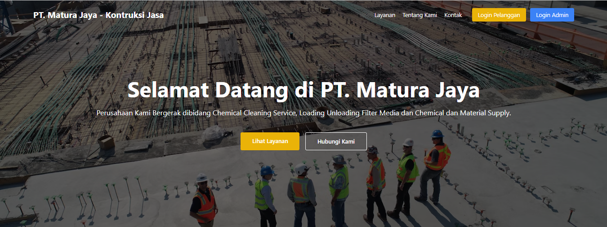
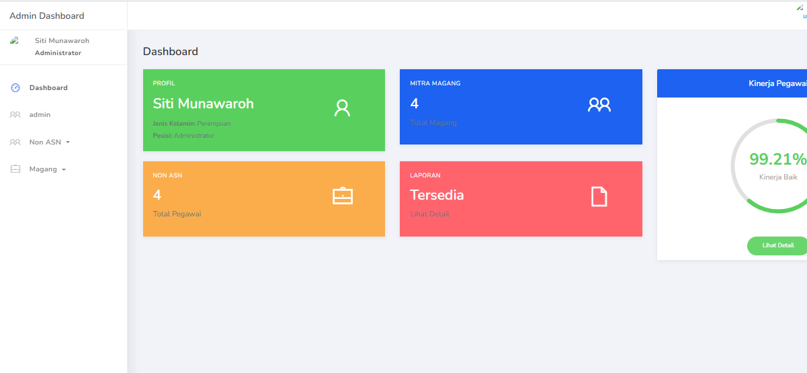
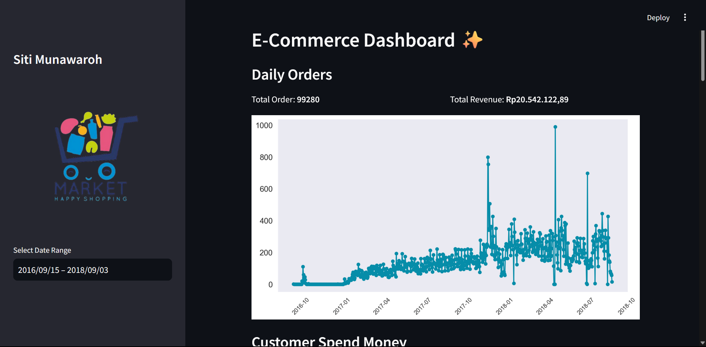

Web Development Portfolio

Perancangan Sistem Penagihan (Invoice) Chemical Cleaning menggunakan Metode Rapid Application Development (RAD) Untuk Jasa Konstruksi: Studi Kasus Pada Pt. Matura Jaya
Tools: Laravel 9
Project type: Website
Sistem Invoice ini digunakan untuk mengelola dan memantau tagihan proyek konstruksi jasa secara efisien. Sistem ini fiturnya cukup lengkap diantaranya ada pembuatan invoice otomatis, tracking status pembayaran, chat, bukti pembayaran dan laporan keuangan.
VIEW CASE
Sistem Penilaian Kinerja Magang dan Pegawai Berbasis Web Menggunakan Metode Fuzzy Logic
Tools: PHP, MySQL, Codeneighter
Project Type: Web Development
Sistem ini dirancang untuk memberikan evaluasi yang objektif dan akurat terhadap kinerja magang dan pegawai berdasarkan berbagai kriteria yang telah ditentukan.
VIEW CASEData Analysis Portfolio

Submission Analyst Data Dashboard - Dicoding - Bangkit Academy
Tools: Streamlit
Project Type: Data Analysis
Project ini bertujuan untuk menganalisis data pada e-commerce public dataset.
VIEW CASE
Submission Data Analyst Dashboard di Power BI - MariBelajar
Tools: Power BI
Project Type: Data Analysis
Dashboard Sales Report PT MariBelajar ini bertujuan untuk: Menganalisis kinerja penjualan berdasarkan total revenue dan jumlah unit terjual. Memantau tren penjualan dari waktu ke waktu melalui grafik revenue. Melihat kontribusi penjualan per produk dan kategori produk. Membantu pengambilan keputusan bisnis dengan filter produk dan tanggal agar analisis lebih spesifik.
VIEW CASEUI/UX Design Portfolio

Movie Ticket Booking App - Figma
Tools: Figma
Project Type: UI/UX Design
Movie Ticket Booking App adalah aplikasi yang memudahkan pengguna untuk memesan tiket bioskop secara online. Dengan antarmuka yang intuitif dan desain yang menarik, pengguna dapat dengan mudah mencari film, memilih jadwal, dan melakukan pembayaran dengan cepat.
VIEW CASE